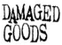

Links
Television Personalities Sites (Updated 12/03/2001)
Labels (Updated
31/03/2002)
The following labels released TVPs' records and run
their own mailorder.
| Bouncing Corp: run by Hans-Martin Gross, formerly of Pastell records, which released "Chocolate Art". | |
| Cherry Red have a wide & very diverse catalogue. | |
 |
Check Damaged Goods' web site for their cool garage & pop catalogue. |
| Fire is home of the first four TVPs albums reissues and of all early 90's TVPs output. | |
| Little Teddy have a small but very cool mailorder catalogue with releases from great labels such as Overground, Perfect Pop, Damaged Goods, Vinyl Japan, Bi-Joopiter, K, Detour and bands such as The Bartlebees, McTells, Silly Pillows and many others. Lots of non-Litlle Teddy TVPs releases too!. | |
| After a period of inactivity Overground is back. | |
| Perfect Pop live up to their name. Click and order! | |
| Check Vinyl Japan's web site for their cool garage & pop catalogue. |
Mailorders (Updated
18/11/98)
I got most of my TVPs records from some of the following
mailorders. Your quest for TVPs completism starts here!
You can also try:
| One of those internet megastores,
Amazon have a small
selection of TVPs CDs. Also check Amazon UK, who carry a much wider selection. |
|
| One of those internet megastores, CDnow have a small selection of TVPs CDs. | |
| GEMM is not a
store but a common marketplace for over 2,000 sellers (shops, collectors,
bands, etc). Many rare TVPs items can be found here. Try both the following
GEMM searches: - Television Personalities - TV Personalities |
P!O!P! Sites (Updated
12/03/2001)